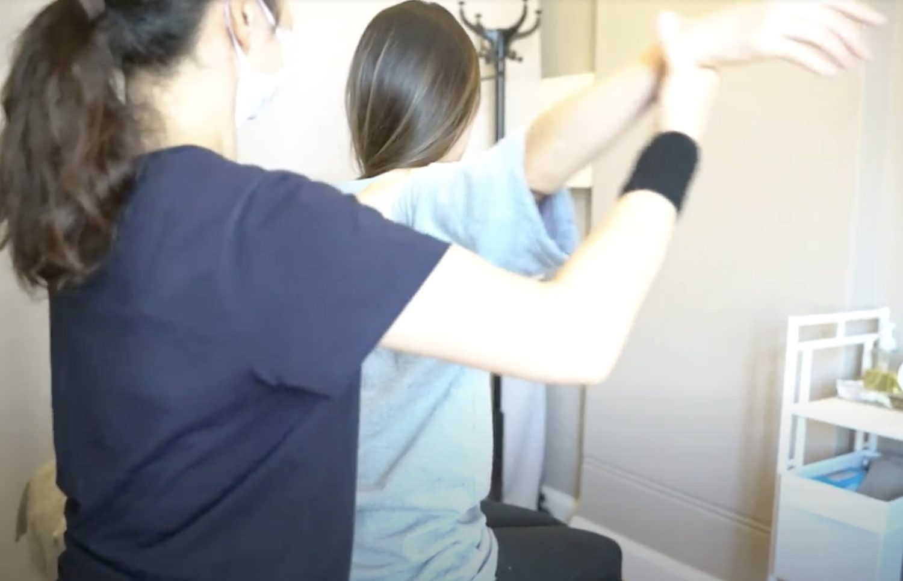

SEITAI · 整体
整体は、体が自分で戻ろうとする力を助けます。
整体は、手だけで行う日本の療法です。オイルは使わず、骨を直接動かす矯正もしません。

どんな施術か
整体は、体全体をひとつとして見ます。骨盤や背骨といった体の芯から、骨格を本来の位置へ整えていきます。
そのとき、骨を直接動かすことはしません。骨のまわりの筋肉などに手で働きかけ、体が自分で整っていくのを助けます。
- こわばりやゆがみを早く見つけ、けがの予防につなげます。
- 体に負担の少ない施術です。使うのは手だけで、オイルも使いません。
- 緊張をゆるめて血流をよくし、ねんざなどの回復を助けます。
整体
筋肉などの軟部組織に働きかけ、骨格が自然に整うのを待ちます。
カイロプラクティックとの違い
整体では、骨格を直接調整することはありません。
施術者
荒畑 真由美Mayumi Arahata｜整体師・リメディアルマッサージセラピスト

真由美は、整体の家系に育ちました。祖父は、皇室からも声がかかった鍼灸師です。
マッサージと整体に携わって18年以上、施術した人は2万人を超えます。この数年は、日本の技術をオーストラリアの方々に届けることに力を入れています。
オーストラリアで施術を始める。
Dr. Ken Yamamoto に KYT テクニックを学ぶ。
Dr. Makoto Minami に日本伝統療法を学ぶ。
Observatory Hotel（現 The Langham, Sydney）のスパのサポートで永住権を取得。
Waitara に MH Clinic を開業。
ノースの Pymble に開業。
シドニー市内に alpha remedial を開業。
スタッフ：Seira（リメディアルマッサージセラピスト）。セラピストはオーストラリアの国家資格を持っています。
まずは、初回60分から。
初回は問診込みで $120 です。オンラインで予約できます。先に聞きたいことがあれば SMS でどうぞ。